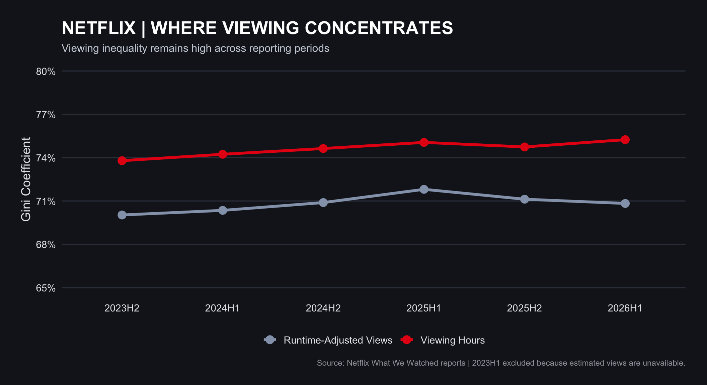

Code
library(tidyverse)
library(rvest)
library(readxl)
library(fs)
library(gt)Afiya Afnin Anika
#' Acquire Netflix What We Watched Reports
#'
#' This function will acquire and standardize all data for MP#01
#' from Netflix. Because Netflix hosts the data files behind a CDN, we
#' are accessing the release pages and automatically extracting links to the
#' relevant files (with CDN hash).
#'
#' After import, files are stacked vertically and some basic cleaning is
#' performed.
load_netflix_data <- function(){
# Note to students: Make sure you have installed the tidyverse and fs packages
# before beginning this assignment. If you aren't sure,
# simply run `library(tidyverse)` at your R Console and, if
# you don't see an error message, `tidyverse` has been
# installed. (Same for `fs`) If you still need to install
# either package, use the `install.packages` function as
# demonstrated in class.
library(tidyverse)
library(rvest)
library(readxl)
library(fs)
data_dir <- path("data", "mp01")
if(!dir_exists(data_dir)){
dir_create(data_dir, showWarnings=FALSE, recurse=TRUE)
}
NETFLIX_URLS <- list(
`2023H1` = "https://about.netflix.com/news/what-we-watched-a-netflix-engagement-report",
`2023H2` = "https://about.netflix.com/news/what-we-watched-the-second-half-of-2023",
`2024H1` = "https://about.netflix.com/news/what-we-watched-the-first-half-of-2024",
`2024H2` = "https://about.netflix.com/news/what-we-watched-the-second-half-of-2024",
`2025H1` = "https://about.netflix.com/news/what-we-watched-the-first-half-of-2025",
`2025H2` = "https://about.netflix.com/news/what-we-watched-the-second-half-of-2025",
`2026H1` = "https://about.netflix.com/news/what-we-watched-the-first-half-of-2026"
)
download_if_needed <- function(url, local){
if(!file_exists(local)){
download.file(url, local, quiet = TRUE, mode = "wb")
}
return(local)
}
NETFLIX_URLS |>
map(read_html) |>
map(html_element, xpath = "//a[contains(@href, '.xlsx')]") |>
map_chr(html_attr, "href") |>
enframe("period", "url") |>
mutate(path = path(data_dir, paste0(period, ".xlsx")),
path = map2(url, path, download_if_needed),
data = map(path, read_excel, skip=3, na="*"),
data = map(data, \(x) x |> mutate(`Release Date` = as.Date(`Release Date`)))) |>
unnest(data) |>
select(-url, -path) |>
mutate(year=str_sub(period, 1, 4),
half=str_sub(period, start=6),
period_start = make_date(year, if_else(half==1, 1, 7), 1),
period_end = make_date(year, if_else(half==1, 6, 12), if_else(half==1, 30, 31))) |>
filter(!is.na(`Hours Viewed`)) |>
mutate(live_event = !is.na(Runtime) & str_detect(Runtime, "\\d+:\\d+\\*"),
clean_time = str_remove(Runtime, fixed("*")),
Runtime = 60 * hour(hm(clean_time)) + minute(hm(clean_time))) |>
select(-clean_time) |>
mutate(Runtime = coalesce(Runtime, mean(Runtime, na.rm=TRUE)),
.by=Title,
Title = stringi::stri_trans_general(Title, "Latin-ASCII"),
Title = str_remove(Title, " // .*"),
Title = str_remove(Title, "[^[:ascii:]].*"),
Title = str_trim(Title)) |>
filter_out(Title == "") |>
select(year,
period,
period_start,
period_end,
Title,
-half,
Runtime,
Views,
`Hours Viewed`,
`Release Date`,
`Available Globally?`,
live_event)
}
NETFLIX_DATA <- load_netflix_data() [1] "year" "period" "period_start"
[4] "period_end" "title" "runtime"
[7] "views" "hours_viewed" "release_date"
[10] "available_globally" "live_event" [1] "integer"Rows: 61,892
Columns: 11
$ year <int> 2023, 2023, 2023, 2023, 2023, 2023, 2023, 2023, 202…
$ period <chr> "2023H1", "2023H1", "2023H1", "2023H1", "2023H1", "…
$ period_start <date> 2023-01-01, 2023-01-01, 2023-01-01, 2023-01-01, 20…
$ period_end <date> 2023-06-30, 2023-06-30, 2023-06-30, 2023-06-30, 20…
$ title <chr> "The Night Agent: Season 1", "Ginny & Georgia: Seas…
$ runtime <dbl> 491, 587, 856, 409, 389, 497, 2703, 533, 548, 428, …
$ views <dbl> NA, NA, NA, NA, NA, NA, NA, NA, NA, NA, NA, NA, NA,…
$ hours_viewed <dbl> 812100000, 665100000, 622800000, 507700000, 5030000…
$ release_date <date> 2023-03-23, 2023-01-05, 2022-12-30, 2022-11-23, 20…
$ available_globally <lgl> TRUE, TRUE, TRUE, TRUE, TRUE, TRUE, FALSE, TRUE, TR…
$ live_event <lgl> FALSE, FALSE, FALSE, FALSE, FALSE, FALSE, FALSE, FA… year period period_start period_end
Min. :2023 Length :61892 Min. :2023-01-01 Min. :2023-06-30
1st Qu.:2023 N.unique : 7 1st Qu.:2023-01-01 1st Qu.:2023-06-30
Median :2024 N.blank : 0 Median :2024-01-01 Median :2024-06-30
Mean :2024 Min.nchar: 6 Mean :2024-04-12 Mean :2024-10-10
3rd Qu.:2025 Max.nchar: 6 3rd Qu.:2025-07-01 3rd Qu.:2025-12-31
Max. :2026 Max. :2026-01-01 Max. :2026-06-30
title runtime views hours_viewed
Length :61892 Min. : 2.0 Min. : 100000 Min. : 100000
N.unique :24427 1st Qu.: 210.0 1st Qu.: 100000 1st Qu.: 500000
N.blank : 0 Median : 320.0 Median : 400000 Median : 1800000
Min.nchar: 1 Mean : 467.3 Mean : 1375241 Mean : 8265858
Max.nchar: 217 3rd Qu.: 545.0 3rd Qu.: 1200000 3rd Qu.: 6400000
Max. :23853.0 Max. :144800000 Max. :964100000
NAs :13085 NAs :18198
release_date available_globally live_event
Min. :2010-04-01 Mode :logical Mode :logical
1st Qu.:2019-05-31 FALSE:40171 FALSE:61582
Median :2021-06-17 TRUE :21719 TRUE :310
Mean :2021-03-25 NAs :2
3rd Qu.:2023-02-14
Max. :2026-06-29
NAs :35251 | Netflix Records by Reporting Period | |
| Reporting Period | Number of Records |
|---|---|
| 2023H1 | 18,196 |
| 2023H2 | 6,595 |
| 2024H1 | 6,797 |
| 2024H2 | 6,877 |
| 2025H1 | 7,502 |
| 2025H2 | 7,738 |
| 2026H1 | 8,187 |
The Netflix dataset covers the period from January 01, 2023 to June 30, 2026.
The Netflix dataset contains 24,427 unique titles.
The five main shows in the Bridgerton universe accumulated 4,860,400,000 viewing hours across the seven Netflix reporting periods.
The five original seasons of Stranger Things accumulated 5,548,500,000 viewing hours across the seven Netflix reporting periods.
netflix_2026h1 <- NETFLIX_DATA |>
filter(period == "2026H1")
total_hours_2026h1 <- netflix_2026h1 |>
summarize(total = sum(hours_viewed, na.rm = TRUE)) |>
pull(total)
top10_actual_hours <- netflix_2026h1 |>
filter(title != "Other Shows") |>
slice_max(
order_by = hours_viewed,
n = 10,
with_ties = FALSE
) |>
summarize(hours = sum(hours_viewed, na.rm = TRUE)) |>
pull(hours)
top10_actual_percentage <-
100 * top10_actual_hours / total_hours_2026h1
top10_actual_percentage[1] 6.101413The Top 10 individual Netflix titles in 2026H1 accounted for 6.10% of total viewing hours, excluding the aggregate category “Other Shows” from the Top 10 ranking but retaining it in the total watch time.
global_distinct_titles <- NETFLIX_DATA |>
filter(
!is.na(available_globally),
title != "Other Shows"
) |>
group_by(title) |>
summarize(
always_global = all(available_globally),
.groups = "drop"
) |>
summarize(
total_titles = n(),
always_global_titles = sum(always_global),
percentage = 100 * mean(always_global)
)
global_title_share <- NETFLIX_DATA |>
filter(
!is.na(available_globally),
title != "Other Shows"
) |>
summarize(
total_title_periods = n(),
global_title_periods = sum(available_globally),
percentage = 100 * global_title_periods / total_title_periods
)
global_hours_share <- NETFLIX_DATA |>
filter(!is.na(available_globally)) |>
summarize(
total_hours = sum(hours_viewed, na.rm = TRUE),
global_hours = sum(
hours_viewed[available_globally],
na.rm = TRUE
),
percentage = 100 * global_hours / total_hours
)
global_title_share# A tibble: 1 × 3
total_title_periods global_title_periods percentage
<int> <int> <dbl>
1 61890 21719 35.1# A tibble: 1 × 3
total_hours global_hours percentage
<dbl> <dbl> <dbl>
1 510174500000 265637100000 52.1Of the distinct Netflix titles with known availability, 21.08% were globally available in every reporting period in which they appeared.
Across the seven reporting periods, 35.09% of Netflix title-period records with known availability were classified as globally available.
When weighted by viewing hours, globally available content accounted for 52.07% of total reported watch time.
top_title_by_period <- NETFLIX_DATA |>
group_by(period) |>
mutate(
period_total_hours = sum(hours_viewed, na.rm = TRUE)
) |>
filter(title != "Other Shows") |>
slice_max(
order_by = hours_viewed,
n = 1,
with_ties = FALSE
) |>
mutate(
share_pct = 100 * hours_viewed / period_total_hours
) |>
ungroup() |>
arrange(period) |>
select(period, title, hours_viewed, share_pct)
top_title_by_period |>
gt() |>
tab_header(
title = "Netflix's Most-Watched Title in Each Reporting Period",
subtitle = "Leading individual title by viewing hours, 2023H1–2026H1"
) |>
cols_label(
period = "Period",
title = "Top Title",
hours_viewed = "Viewing Hours",
share_pct = "Share of Watch Time (%)"
) |>
fmt_number(columns = hours_viewed, decimals = 0) |>
fmt_number(columns = share_pct, decimals = 2) |>
tab_source_note(
source_note = "Source: Netflix What We Watched reports. Aggregate 'Other Shows' excluded from ranking but included in total viewing hours."
)| Netflix's Most-Watched Title in Each Reporting Period | |||
| Leading individual title by viewing hours, 2023H1–2026H1 | |||
| Period | Top Title | Viewing Hours | Share of Watch Time (%) |
|---|---|---|---|
| 2023H1 | The Night Agent: Season 1 | 812,100,000 | 0.87 |
| 2023H2 | King the Land: Limited Series | 630,200,000 | 0.97 |
| 2024H1 | Bridgerton: Season 3 | 733,800,000 | 1.08 |
| 2024H2 | Squid Game: Season 2 | 619,900,000 | 0.91 |
| 2025H1 | Squid Game: Season 2 | 840,300,000 | 1.18 |
| 2025H2 | Wednesday: Season 2 | 964,100,000 | 1.35 |
| 2026H1 | Bridgerton: Season 4 | 889,800,000 | 1.20 |
| Source: Netflix What We Watched reports. Aggregate 'Other Shows' excluded from ranking but included in total viewing hours. | |||
catalog_clean <- NETFLIX_DATA |>
filter(title != "Other Shows") |>
distinct()
catalog_final <- catalog_clean |>
group_by(period) |>
summarize(
unique_titles = n_distinct(title),
total_runtime_hours = sum(runtime, na.rm = TRUE) / 60,
missing_runtime = sum(is.na(runtime)),
.groups = "drop"
) |>
arrange(period)
catalog_final |>
gt() |>
tab_header(
title = "Netflix Catalog Size and Recorded Runtime",
subtitle = "Unique title names and known runtime by reporting period"
) |>
cols_label(
period = "Reporting Period",
unique_titles = "Unique Titles",
total_runtime_hours = "Known Runtime (Hours)",
missing_runtime = "Missing Runtime"
) |>
fmt_number(
columns = c(unique_titles, total_runtime_hours, missing_runtime),
decimals = 0
) |>
tab_source_note(
source_note = "Source: Netflix What We Watched reports. Exact duplicate rows and 'Other Shows' excluded. Runtime totals omit missing values; 2023H1 has substantial missing runtime data."
)| Netflix Catalog Size and Recorded Runtime | |||
| Unique title names and known runtime by reporting period | |||
| Reporting Period | Unique Titles | Known Runtime (Hours) | Missing Runtime |
|---|---|---|---|
| 2023H1 | 18,126 | 43,686 | 12,407 |
| 2023H2 | 6,574 | 50,085 | 110 |
| 2024H1 | 6,775 | 51,748 | 103 |
| 2024H2 | 6,854 | 53,582 | 106 |
| 2025H1 | 7,473 | 58,342 | 107 |
| 2025H2 | 7,711 | 59,697 | 109 |
| 2026H1 | 8,162 | 62,855 | 133 |
| Source: Netflix What We Watched reports. Exact duplicate rows and 'Other Shows' excluded. Runtime totals omit missing values; 2023H1 has substantial missing runtime data. | |||
consistent_titles <- NETFLIX_DATA |>
filter(title != "Other Shows") |>
group_by(title, period) |>
summarize(
hours = sum(hours_viewed, na.rm = TRUE),
.groups = "drop"
) |>
group_by(title) |>
summarize(
periods = n(),
average_hours = mean(hours),
minimum_hours = min(hours),
sd_hours = sd(hours),
.groups = "drop"
) |>
filter(periods == 7) |>
arrange(desc(minimum_hours)) |>
slice_head(n = 10)
consistent_titles |>
gt() |>
tab_header(
title = "Netflix Titles with Consistently High Viewership",
subtitle = "Top 10 ranked by minimum viewing hours across seven reporting periods"
) |>
cols_label(
title = "Netflix Title",
periods = "Periods",
average_hours = "Average Hours",
minimum_hours = "Minimum Hours",
sd_hours = "Standard Deviation"
) |>
fmt_number(
columns = c(average_hours, minimum_hours, sd_hours),
decimals = 0
) |>
tab_source_note(
source_note = "Source: Netflix What We Watched reports. Viewing hours are summed by title and period. Rankings use the highest minimum viewing hours across seven periods."
)| Netflix Titles with Consistently High Viewership | ||||
| Top 10 ranked by minimum viewing hours across seven reporting periods | ||||
| Netflix Title | Periods | Average Hours | Minimum Hours | Standard Deviation |
|---|---|---|---|---|
| Pablo Escobar, el patron del mal: Season 1 | 7 | 136,214,286 | 105,500,000 | 22,860,842 |
| Chiquititas (2013) | 7 | 120,014,286 | 105,000,000 | 19,421,588 |
| Stranger Things 4 | 7 | 207,385,714 | 97,100,000 | 171,675,823 |
| Suits (2011): Season 1 | 7 | 126,885,714 | 80,900,000 | 59,209,724 |
| Breaking Bad: Season 2 | 7 | 91,614,286 | 78,500,000 | 11,977,399 |
| Suits (2011): Season 2 | 7 | 120,314,286 | 76,100,000 | 61,523,828 |
| Sam & Cat: Season 1 | 7 | 91,242,857 | 75,700,000 | 13,755,588 |
| Breaking Bad: Season 5 | 7 | 84,114,286 | 74,900,000 | 10,690,249 |
| Money Heist: Part 1 | 7 | 80,571,429 | 73,100,000 | 9,627,515 |
| Breaking Bad: Season 3 | 7 | 81,971,429 | 70,900,000 | 10,717,076 |
| Source: Netflix What We Watched reports. Viewing hours are summed by title and period. Rankings use the highest minimum viewing hours across seven periods. | ||||
content_type_data <- NETFLIX_DATA |>
filter(title != "Other Shows") |>
mutate(
content_type = case_when(
str_detect(title, regex("Season", ignore_case = TRUE)) ~ "TV Show",
runtime > 240 ~ "TV Show",
is.na(runtime) ~ "Unknown",
TRUE ~ "Movie"
)
)
content_type_summary <- content_type_data |>
group_by(period, content_type) |>
summarize(
total_hours = sum(hours_viewed, na.rm = TRUE),
.groups = "drop"
) |>
group_by(period) |>
mutate(
share_pct = 100 * total_hours / sum(total_hours)
) |>
ungroup() |>
select(period, content_type, share_pct) |>
pivot_wider(
names_from = content_type,
values_from = share_pct,
values_fill = 0
) |>
arrange(period)
content_type_summary |>
gt() |>
tab_header(
title = "Netflix Viewing Time by Content Type",
subtitle = "Estimated percentage of viewing hours, 2023H1–2026H1"
) |>
cols_label(
period = "Reporting Period",
Movie = "Movies (%)",
`TV Show` = "TV Shows (%)",
Unknown = "Unknown (%)"
) |>
fmt_number(
columns = c(Movie, `TV Show`, Unknown),
decimals = 2
) |>
tab_source_note(
source_note = "Source: Netflix What We Watched reports. Classification uses 'Season' in the title or runtime exceeding 240 minutes for TV shows. Titles with missing runtime and no season indicator are classified as Unknown. 'Other Shows' is excluded."
)| Netflix Viewing Time by Content Type | |||
| Estimated percentage of viewing hours, 2023H1–2026H1 | |||
| Reporting Period | Movies (%) | TV Shows (%) | Unknown (%) |
|---|---|---|---|
| 2023H1 | 2.88 | 69.17 | 27.95 |
| 2023H2 | 3.55 | 95.78 | 0.66 |
| 2024H1 | 3.21 | 95.70 | 1.09 |
| 2024H2 | 2.78 | 96.46 | 0.76 |
| 2025H1 | 4.17 | 95.10 | 0.73 |
| 2025H2 | 3.33 | 95.64 | 1.03 |
| 2026H1 | 3.26 | 95.73 | 1.01 |
| Source: Netflix What We Watched reports. Classification uses 'Season' in the title or runtime exceeding 240 minutes for TV shows. Titles with missing runtime and no season indicator are classified as Unknown. 'Other Shows' is excluded. | |||
live_comparison <- NETFLIX_DATA |>
filter(
title != "Other Shows",
!is.na(hours_viewed)
) |>
mutate(
content_format = if_else(
live_event,
"Live Event",
"Pre-recorded"
)
) |>
group_by(period, content_format) |>
summarize(
records = n(),
average_hours = mean(hours_viewed),
top_tier_hours = quantile(
hours_viewed,
probs = 0.90
),
.groups = "drop"
) |>
arrange(period, content_format)
live_comparison |>
gt() |>
tab_header(
title = "Netflix Live Events vs. Pre-recorded Content",
subtitle = "Average and 90th-percentile viewing hours by period"
) |>
cols_label(
period = "Reporting Period",
content_format = "Content Format",
records = "Records",
average_hours = "Average Viewing Hours",
top_tier_hours = "90th-Percentile Hours"
) |>
fmt_number(
columns = c(records, average_hours, top_tier_hours),
decimals = 0
) |>
tab_source_note(
source_note = "Source: Netflix What We Watched reports. Top-tier performance is measured using the 90th percentile. Records with missing viewing hours and the aggregate 'Other Shows' are excluded. The 2024H2 live-event group contains only three records."
)| Netflix Live Events vs. Pre-recorded Content | ||||
| Average and 90th-percentile viewing hours by period | ||||
| Reporting Period | Content Format | Records | Average Viewing Hours | 90th-Percentile Hours |
|---|---|---|---|---|
| 2023H1 | Pre-recorded | 18,196 | 5,133,414 | 11,500,000 |
| 2023H2 | Pre-recorded | 6,595 | 9,845,489 | 24,060,000 |
| 2024H1 | Pre-recorded | 6,797 | 10,040,356 | 26,040,000 |
| 2024H2 | Live Event | 3 | 78,766,667 | 188,640,000 |
| 2024H2 | Pre-recorded | 6,874 | 9,884,143 | 24,400,000 |
| 2025H1 | Live Event | 88 | 3,412,500 | 7,420,000 |
| 2025H1 | Pre-recorded | 7,414 | 9,550,917 | 23,600,000 |
| 2025H2 | Live Event | 102 | 2,194,118 | 5,990,000 |
| 2025H2 | Pre-recorded | 7,635 | 9,233,857 | 21,900,000 |
| 2026H1 | Live Event | 117 | 2,933,333 | 6,240,000 |
| 2026H1 | Pre-recorded | 8,069 | 9,075,895 | 21,400,000 |
| Source: Netflix What We Watched reports. Top-tier performance is measured using the 90th percentile. Records with missing viewing hours and the aggregate 'Other Shows' are excluded. The 2024H2 live-event group contains only three records. | ||||
To: Netflix Senior Leadership
Subject: Strategic Recommendations for Netflix’s 2027 Content Investment
Drawing on Netflix’s viewership data from 2023 through the first half of 2026, I suggest that Netflix should focus its 2027 content investments on successful original series, global accessible programming, and a selective approach to live events. The data suggest that established series continue to draw significant viewing hours, and that globally available content accounts for a large share of total watch time. Live events do provide chances to engage audiences, but on average they haven’t been as consistently good as pre-recorded content. So Netflix should stick to tried and true programming, while cautiously experimenting with new forms.
Netflix should continue investing in successful original series and established franchises because these programs can attract large audiences across multiple reporting periods. For example, Wednesday: Season 2 generated 964.1 million viewing hours in the second half of 2025, while Bridgerton: Season 4 reached 889.8 million viewing hours in the first half of 2026. In addition, shows such as Breaking Bad and Stranger Things maintained substantial viewing hours across multiple years. These findings suggest that popular series can provide both immediate audience interest and long-term viewing value. For 2027, Netflix should prioritize carefully selected renewals and franchise expansions while continuing to invest in new original productions that have the potential to become future hits.
Netflix should place greater emphasis on making its most valuable content available across international markets. My analysis found that globally available programming accounted for 52.07% of total reported viewing hours, although only 35.09% of title-period records were classified as globally available. This difference suggests that globally accessible content plays an important role in Netflix’s overall viewing activity. For 2027, Netflix should consider expanding international distribution rights for successful programs and investing in original productions that can appeal to audiences across multiple countries. However, global availability alone does not guarantee higher viewership, so Netflix should also consider regional preferences, licensing costs, and the potential demand for each title before making investment decisions.
Netflix should take a careful approach to expanding live events rather than making them a major part of its 2027 content investment strategy. My analysis shows that live events averaged approximately 2.93 million viewing hours in the first half of 2026, compared with 9.08 million hours for pre-recorded content. However, live programming has demonstrated the potential to attract significant audiences for special events. In the second half of 2024, live events averaged 78.77 million viewing hours, although this result was based on only three records. These differences suggest that Netflix should focus on carefully selected live events, such as major sporting competitions and special entertainment programs, rather than expanding live programming too quickly. Netflix should evaluate audience demand, production costs, licensing expenses, and repeat-viewing potential before committing to larger investments.
Netflix should focus on improving the value of its content library rather than simply increasing the number of titles. My analysis shows that the number of distinct title names increased from 6,574 in the second half of 2023 to 8,162 in the first half of 2026. During the same period, recorded catalog runtime increased from approximately 50,085 hours to 62,855 hours. This growth provides viewers with more programming choices, but a larger catalog does not necessarily mean stronger engagement. Netflix should regularly evaluate whether additional titles attract meaningful viewing hours and whether older programs continue to retain audience interest. Instead of spending equally across all categories, Netflix should prioritize content with strong viewing performance, international appeal, and long-term potential. This approach could help the company manage production costs while maintaining a diverse and competitive streaming library.
The Gini analysis provides further support for this recommendation. In the first half of 2026, the viewing-hours Gini coefficient was approximately 75.24%, compared with 70.83% for runtime-adjusted views. Both figures indicate that viewing is concentrated among a relatively small number of titles. Therefore, Netflix should continue investing in proven performers while carefully evaluating whether new titles generate enough audience interest to justify their costs.
To summarize, Netflix should concentrate on its 2027 content strategy on keeping the audience engaged and making smart investment decisions. The viewing data shows the value of good series, the importance of global content availability and the question around live programming. Netflix should focus on projects that have proven audience interest and significant international potential, rather than expanding all content categories equally. The company should also go on experimenting with the new programming and assessing its performance before committing more resources. Such balanced approach can help Netflix to enhance its content library, reduce investment risks and sustain its competitive position in the streaming market.
I used ChatGPT to assist with R programming, debugging, data analysis. I reviewed the analytical results and checked the calculations against the dataset.
| NETFLIX / CONTENT INTELLIGENCE | |||||
| WHERE VIEWING CONCENTRATES — Viewing inequality across six reporting periods | |||||
| PERIOD | HOURS GINI | VIEWS GINI | GAP (PP) | VIEWING HOURS | ADJUSTED VIEWS |
|---|---|---|---|---|---|
| 2023H2 | 73.79 | 70.03 | 3.76 | 73.8 | 70.0 |
| 2024H1 | 74.23 | 70.35 | 3.88 | 74.2 | 70.4 |
| 2024H2 | 74.63 | 70.89 | 3.74 | 74.6 | 70.9 |
| 2025H1 | 75.06 | 71.81 | 3.25 | 75.1 | 71.8 |
| 2025H2 | 74.74 | 71.12 | 3.62 | 74.7 | 71.1 |
| 2026H1 | 75.24 | 70.83 | 4.42 | 75.2 | 70.8 |
| SOURCE: Netflix What We Watched reports. Raw Gini uses viewing hours; adjusted Gini uses estimated views. Both use identical valid records. 2023H1 and aggregate Other Shows excluded. | |||||
The Gini results indicate that Netflix viewing remains highly concentrated among a relatively small group of titles. In 2026H1, the viewing-hours Gini was approximately 75.24%, compared with 70.83% for runtime-adjusted views.

Interpretation: Netflix viewing activity remains highly concentrated throughout the reporting periods. Runtime-adjusted estimated views consistently show slightly lower inequality than total viewing hours, suggesting that program length contributes to the observed concentration.